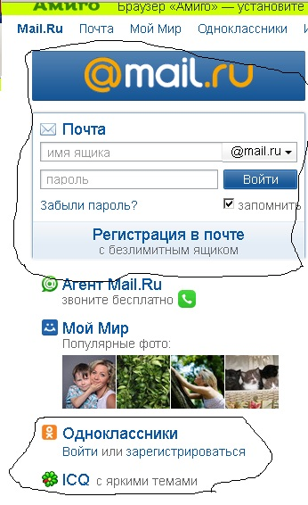

Расмотрим сайт mail.ru
В результате у Mail.ru Group сейчас есть несколько основных подразделений: + обственно, сама почта Mail.ru. + Социальные сервисы: сеть Мой Мир и сеть Одноклассники. Кроме этого, Mail.ru Group владеет долей 39,99% в сети Вконтакте, хотя и не контролирует эту социальную сеть. Одноклассники, насколько я знаю, попав под оперативное управление Mail.Ru Group (это стало возможно после выкупа 100% акций) с Ильей Широковым в качестве CEO, отказались от множества глупых требований, за которые сеть называли “жадноклассники” и сейчас по количеству пользователей догоняет ту же Вконтакте, ну а по финансовым показателям на сегодня это самая успешная в России сеть.
